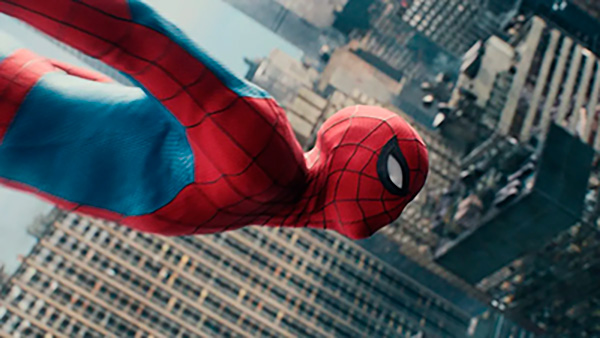

Um Novo Dia não é um título gratuito para o novo filme do Homem-Aranha. Desde sua estreia no Universo Cinematográfico da Marvel, Peter Parker sempre esteve rodeado de estrelas como o Homem de Ferro, Doutor Estranho e até mesmo outros Aranhas. Agora, Destin Daniel Cretton assume as rédeas da franquia e se mostra capaz dar um novo verniz ao herói, sem esquecer da fórmula que fez o filme mais recente do personagem brilhar – nostalgia atrelada a uma carga dramática relevante.
Um Novo Dia não é um título gratuito para o novo filme do Homem-Aranha. Desde sua estreia no Universo Cinematográfico da Marvel, Peter Parker sempre esteve rodeado de estrelas como o Homem de Ferro, Doutor Estranho e até mesmo outros Aranhas. Agora, Destin Daniel Cretton assume as rédeas da franquia e se mostra capaz dar um novo verniz ao herói, sem esquecer da fórmula que fez o filme mais recente do personagem brilhar – nostalgia atrelada a uma carga dramática relevante.
O diretor inverte a lógica de um passado recente e faz dos fan services tanto um artifício visual (como no uniforme que mistura traços das versões anteriores ou nas capas de quadrinhos replicadas em lutas com vilões) como um alívio cômico dentro da evolução do protagonista (como nas cenas das teias orgânicas que traz à mente Tobey Maguire) – nada aqui é guiado por uma alusão ao conhecimento alheio ou conexão com um universo expandido. Hulk (Mark Ruffalo) e o Justiceiro (Jon Bernthal) estão ali, mas quase como convidados de luxo. O foco é todo em o Peter Parker e seus problemas.
/uploads/conteudo/fotos/homem-aranha-critica-3.webp)
Talvez o aspecto que mais tenha me agradado seja a maneira como o filme trata o Hulk. Depois de anos como o "Smart Hulk", o personagem havia perdido parte daquela sensação de perigo que sempre foi fundamental para sua existência. O Hulk podia até continuar sendo extremamente poderoso, mas já não transmitia aquela impressão de que algo terrível poderia acontecer caso Bruce Banner perdesse o controle.
Quando o Hulk aparece, ele não parece simplesmente um Bruce Banner maior e mais forte. Existe raiva, frustração e, principalmente, a sensação de que existe uma personalidade ali que não está mais disposta a permanecer reprimida.
É uma mudança simples, mas extremamente bem-vinda.